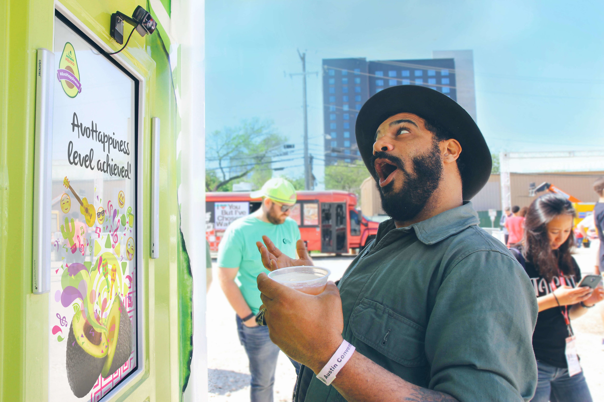
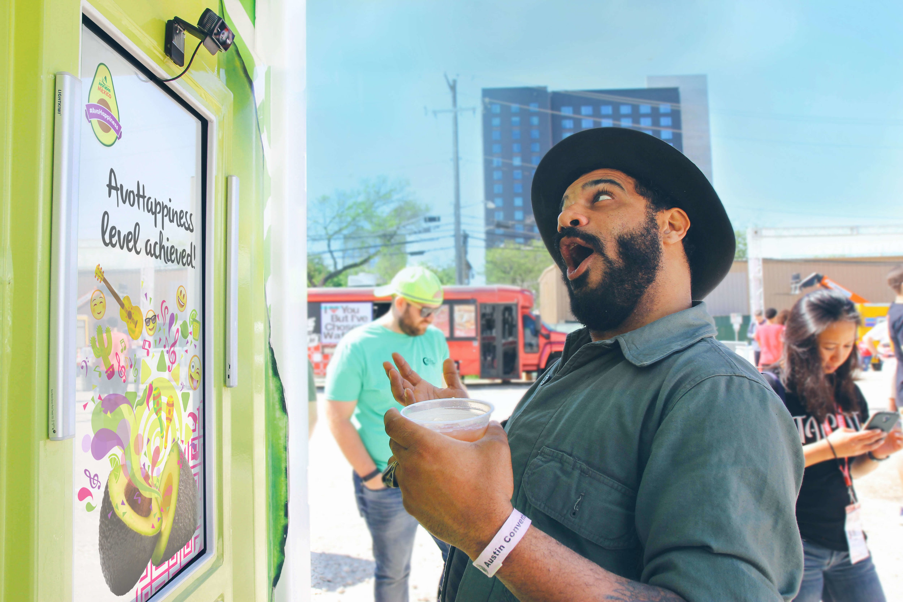

Violet Forest // ⍣٭⋆⋆⍣
⋆⋰⋆⍣٭⍣ scroll → ٭⋆⍣⋆⋰
⋆⋰⋆⍣٭⍣ scroll → ٭⋆⍣⋆⋰

In collaboration with artist and designer Vladimir Hermand, I completed a 3-month fellowship sponsored by Tweag.io's Open Source Fellowship Program, where we built an opensource Open Bionics prosthesis that could be controlled with your phone's front-facing camera.
After a week of conducting user research and virtual interviews to understand the problems from the user's perspective, I was able to design the app and core functionalities for a minimum viable product. Vlad was able to print and assemble the Open Bionics Brunel hand, and I was able to write the code for a Bluetooth Arduino application for the hand that could communicate with a handtracking Android app, so that a user could use their phone and free hand to change the grip of their prosthesis.
We were also able to do in-person user testing with local users in Paris which provided insight into how the product could be improved for the next iteration. At the moment we don't have a next iteration planned but the project is available on Github for anyone to fork or clone. You can see the details of the project here.
üëã Control your Mirru prosthesis with MediaPipe hand tracking.
— Google Developers (@googledevs) May 26, 2021
Read the story of how two independent designers took part in @tweagio's Open Source Fellowship program to help provide an affordable alternative to proprietary technology.
Right here → https://t.co/S1x5824ZT6 pic.twitter.com/NPMxBzXZOq
I worked as a full-time employee at Volkswagen Future Center Europe in Berlin, Germany. I collaborated with UX designers and technologists to conceptualize and rapid prototype UX solutions for Level 3-5 self-driving vehicles in private and car-pooling situations.


The following includes some rapid prototyping projects I have worked on:


We also collaborated with Porsche on a mixed-reality experience.
The Avocados from Mexico Kiosk was an openCV-based Emotion Tracking game featured at SXSW 2017. It was done in-house independent contractor in collaboration with NEXT/NOW agency in Chicago.

 
